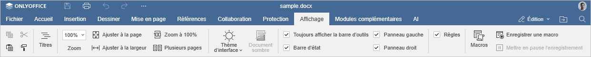
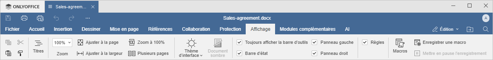

Onglet Affichage
L'onglet Affichage dans l'éditeur de documents permet de gérer l'apparence du document pendant que vous travaillez sur celui-ci.
Fenêtre de l'éditeur de documents en ligne:

Fenêtre de l'éditeur de documents de bureau:

Les options d'affichage disponibles sous cet onglet:
- Titres permet d'afficher et de parcourir des titres dans votre document,.
- Zoom permet de zoomer et dézoomer sur une page du document.
- Ajuster à la page permet de redimensionner la page pour afficher une page entière sur l'écran.
- Ajuster à la largeur permet de redimensionner la page pour l'adapter à la largeur de l'écran.
- Zoom à 100% sert à réinitialiser rapidement la mise à l'échelle initiale à 100%.
- Plusieurs pages sert à passer au mode d'affichage de plusieurs pages pour afficher plusiers pages sur l'écran.
- Thème d'interface permet de modifier le thème d'interface en choisissant le thème Identique à système, Claire, Classique claire, Sombre, Contraste élevé sombre, Gris, Moderne claire ou Moderne sombre.
- L'option Document sombre devient active lorsque vous activez le thème Sombre, Contraste élevé sombre ou Moderne sombre. Cliquez sur cette option pour rendre sombre encore l'espace de travail.
Les options suivantes permettent de choisir les éléments à afficher ou à cacher. Cachez les cases appropriées aux éléments que vous souhaitez rendre visible:
- Toujours afficher la barre d'outils permet de rendre visible la barre d'outils supérieure.
- Barre d'état permet de rendre visible la barre d'état.
- Panneau gauche pour rendre visible le panneau gauche.
- Panneau droit permet de rendre visible le panneau droit.
- Règles permet de rendre visible les règles.
Le bouton Macros permet d'ouvrir la fenêtre où vous pouvez créer vos propres macros et les exécuter. Pour en savoir plus sur les macros, veuillez vous référer à la documentation de notre API.
Pour en savoir plus sur l'enregistrement des macros, veuillez consulter le guide suivant.